大家好，我是江枫
你敢信，小红书，公众号，B站这些平台的数据，仅仅需要安装一个开源CLI工具后就可以获取？
这是我最近发现的一个超强悍的CLI开源工具：OpenCLI
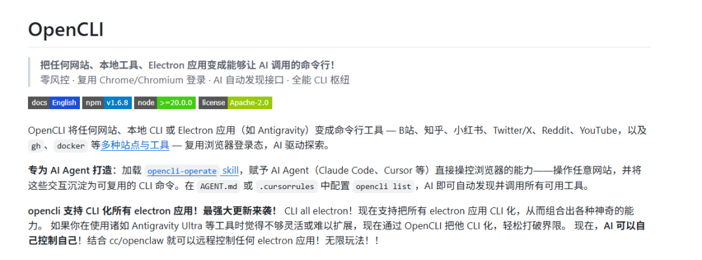
地址：https://github.com/jackwener/opencli/
支持将任意网站转化成命令行工具调用。而且像主流的社媒平台，也支持下载图片，视频，内容。
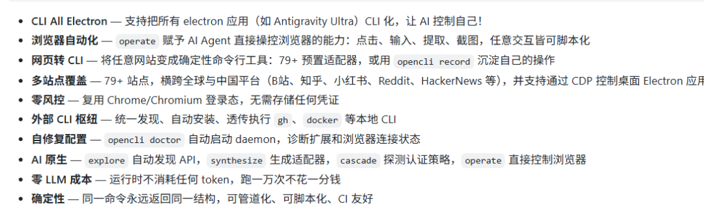
作者一直在维护中，支持的平台超过了79+。
简直就是为Agent量身打造的一款数据获取工具
传统的方法，一般是装一个playwright，然后模拟人的方式，打开浏览器，点击，获取等操作
但这种方法效率很低，而且有个致命问题，每次登录平台还得提醒输入账号进行登录
采用OpenCLI后，每次打开网页，它会读取浏览器中的cookie值，直接登录。
不但可以在龙虾中用，在编程IDE，比如cursor中也可以部署使用。
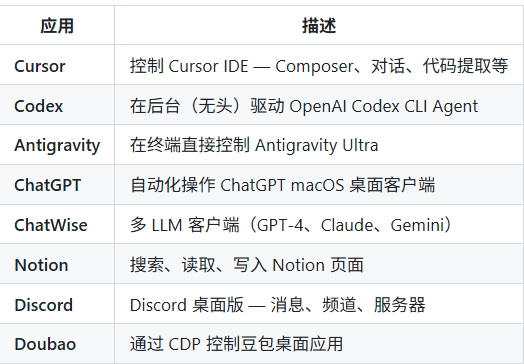
用了很多获取网站，平台数据的工具。OpenCLI应该是最好使的，并且还是免费的。很多CLI工具都是要收费的
就冲免费这一点，还有什么自行车
01
配置安装
先下载一个浏览器插件
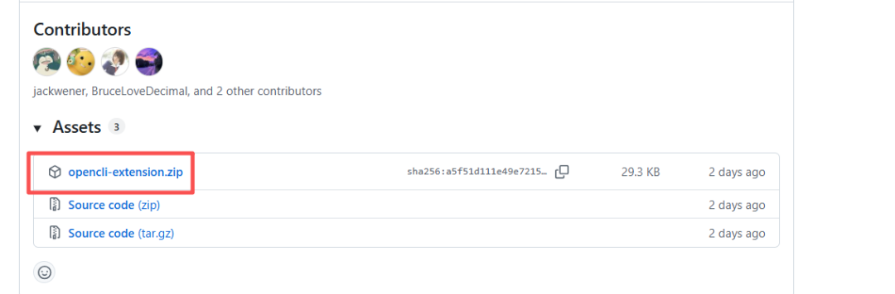
地址：https://github.com/jackwener/opencli/releases
谷歌浏览器输入chrome://extensions/ ，进入后打开开发者模式，加载未打包的程序，导入刚才下载的插件
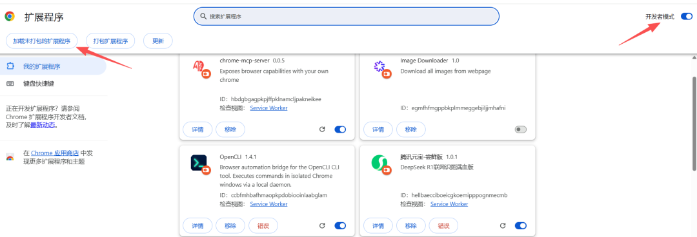
安装完成后，浏览器中继续输入：
chrome://inspect/#remote-debugging
将remote debugging打开
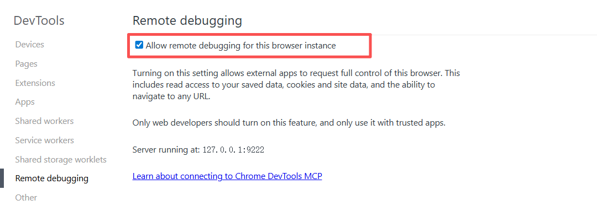
最后在命令窗口中运行下面2个命令安装CLI和skills。
1 安装CLI命令
npm install -g @jackwener/opencli
2 安装Skills
npx skills add jackwener/opencli
安装完成执行opencli list能看到所有支持的平台
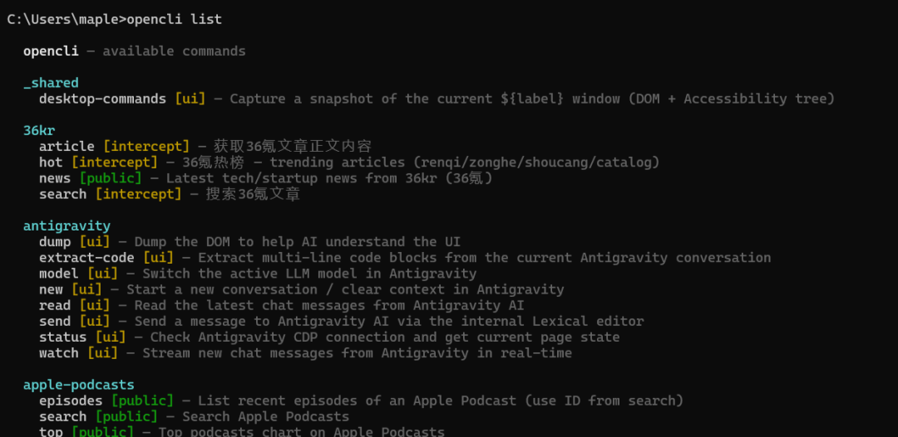
Claude Code中打开，能看到下面几个skills
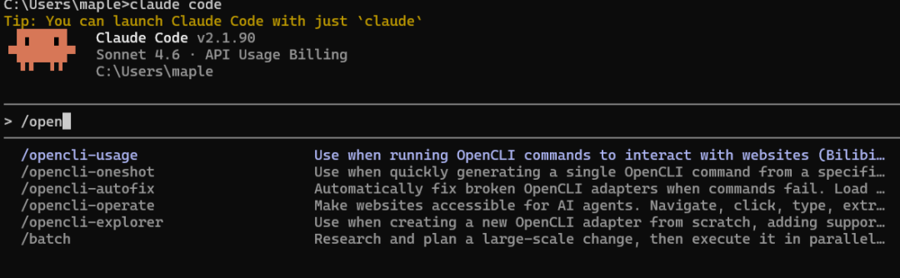
opencli-usage:命令参考
opencli-operate:浏览器自动化（AI Agent 专用）
opencli-explorer:适配器开发指南
opencli-oneshot:快速命令参考
02
OpenCLI实测
公众号文章的下载，一直是个老大难问题。现在想要下载，只需要输入下面的命令即可：
opencli weixin download -url "https://mp.weixin.qq.com/s/rps5YVB6TchT9npAaIWKCw" --output D:\opencli\weixin
url后面带上公众号的网址，output后面带下载的地址
运行后会自动打开浏览器，在左上方能看到OpenCLI已开始调试此浏览器 的提示
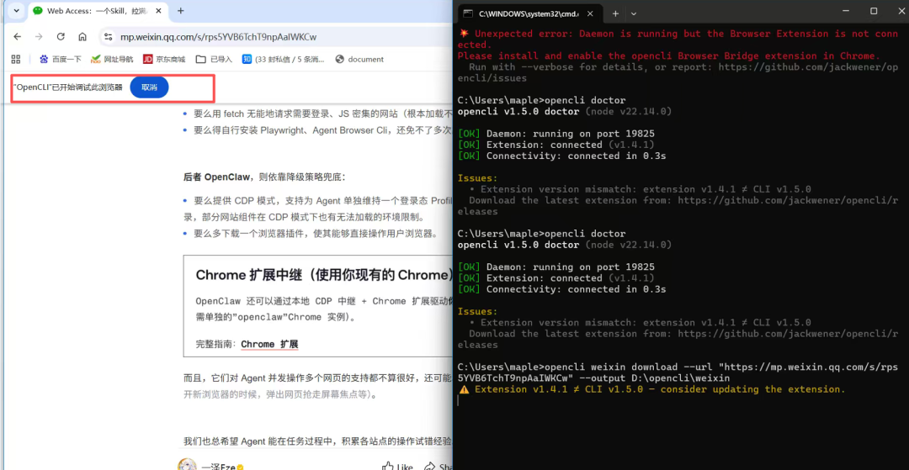
过一会儿，就能看到下载成功的提示。
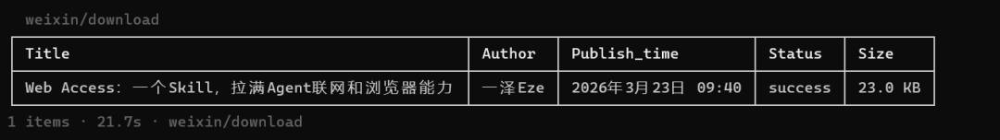
文章内容被保存成了md格式。图片则被保存到了images文件夹下。
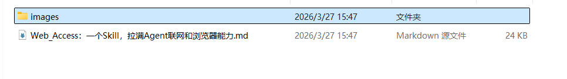
在md文档中，图片的位置和需要插入图片的名称也都标记好了。
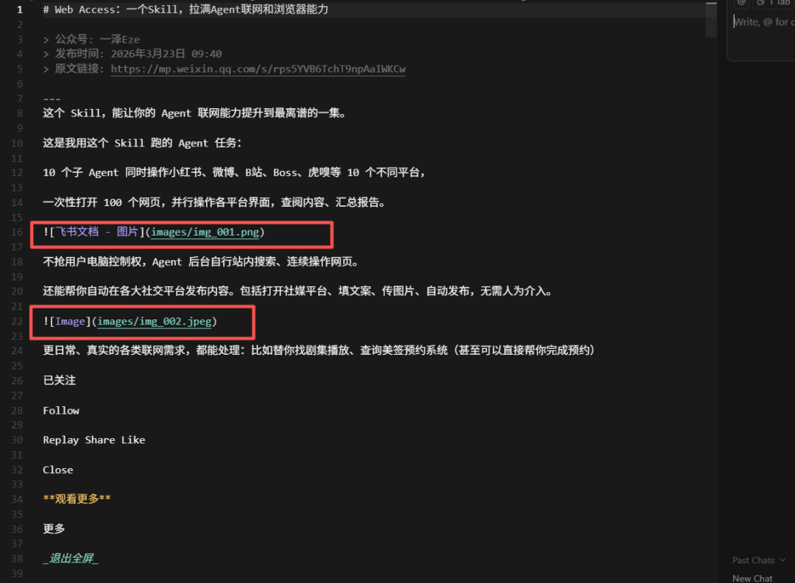
再来下载知乎的，也是同样的打开浏览器后获取网页内容。只要浏览器上登录过知乎就行，不需要重复登录。
opencli zhihu download --url "https://zhuanlan. zhihu.com/p/20206217185872283250" --output D:/zhihu
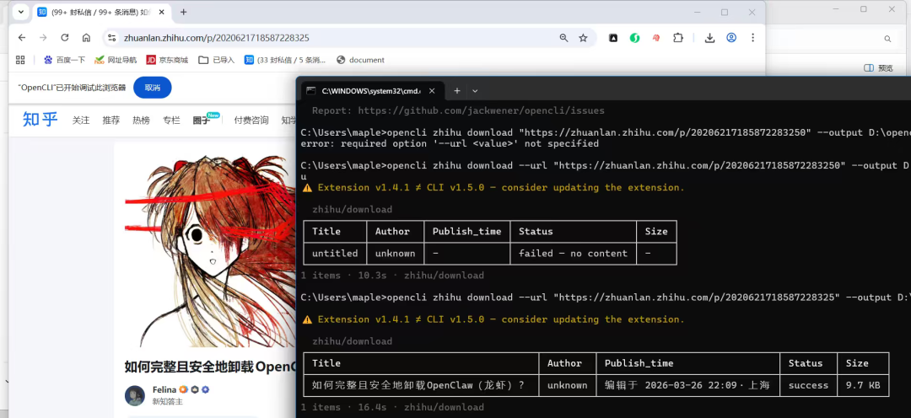
同样的方法可以下载B站，小红书，非常的方便。但是要提前安装下yt-download这个工具
甚至视频的评论区也都可以挨个下载下来
opencli youtube comments https://www.youtube.com/watch?v=kjqOsLdvSFg
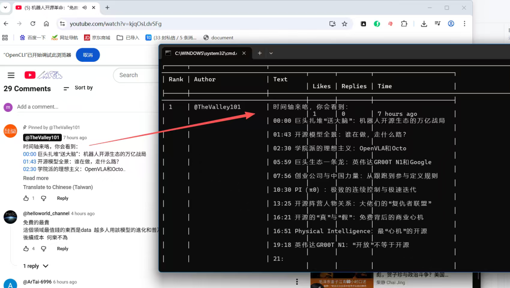
除了这些媒体平台外，我还发现像雪球这样的平台居然也在支持里面
查询雪球上的热点新闻：
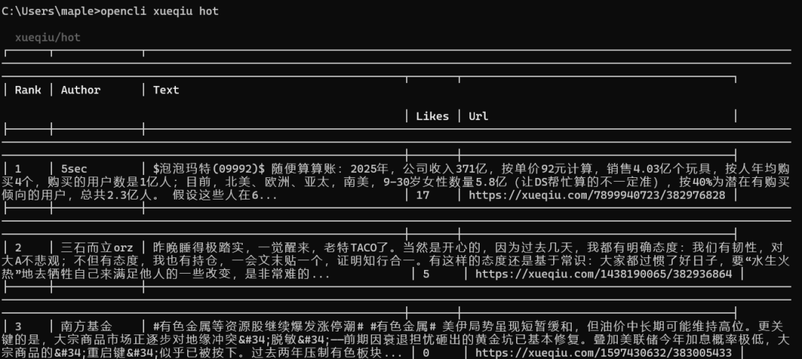
查询热门股票。
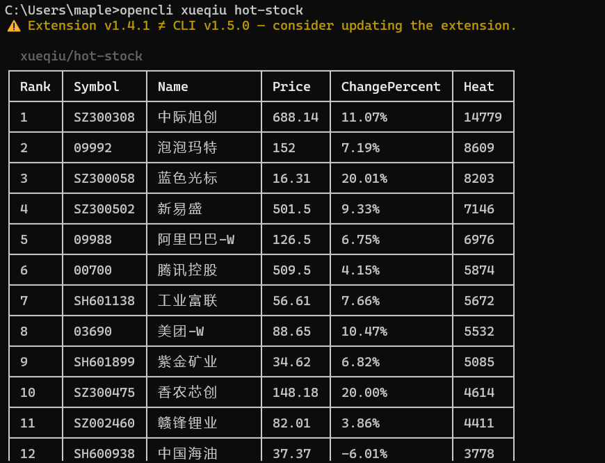
输入股票代码，也能查询到最新的数据。
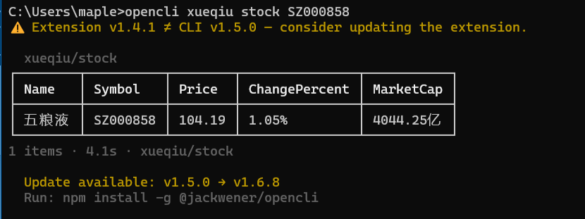
这工具装在小龙虾里面，直接让信息获取能力暴涨。
03
OpenCLI的原理
OpenCLI的通信流程如下
终端命令 → OpenCLI CLI → 本地守护进程 (Daemon) → WebSocket → Chrome 扩展 (Browser Bridge) → 浏览器标签页 → 结果返回
1 安装的Chrome 扩展：它负责接收指令，在指定的浏览器标签页中执行 JavaScript 代码（如点击、滚动、读取数据），并将结果返回
2 本地守护进程：它通过 WebSocket 与 Chrome 扩展通信，管理指令路由和会话状态。
3 底层协议：采用谷歌的CDP，这是真正的技术核心。CDP 是 Chrome 官方提供的调试协议，OpenCLI 利用它来实现对浏览器的远程控制，包括操作 DOM、拦截网络请求、执行脚本等，而非传统的 HTML 爬虫
其实市面上有不少基于CDP来做的浏览器自动化，但OpenCLI是目前为止，我看到用起来最流畅的。
写在最后
自从小龙虾爆火以来，如何给龙虾赋能获取数据的能力一直是个热点
OpenCLI免费，支持平台多。我认为是最具性价比的一个工具。
如果觉得内容不错的话，请帮一键三连，转发给你的朋友
另外想第一时间收到推送，记得将公众号加个星标哦
欢迎交流：jiangfeng2066